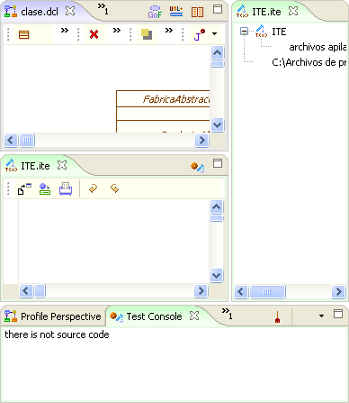
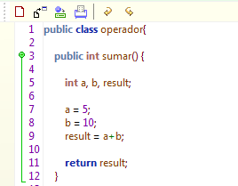
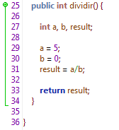
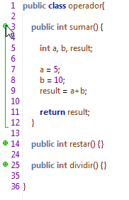
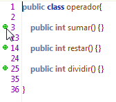
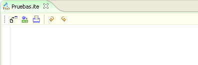
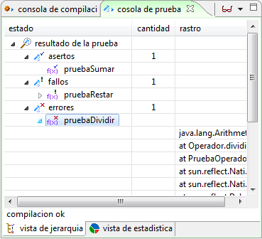
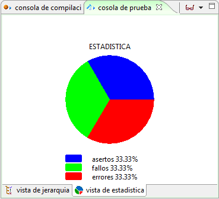
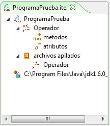

|
Framework ITE |
|
El Ambiente de Prueba Integrado ITE (Integrated Test Enviroment, por sus siglas en inglés) es un Framework creado para facilitar la tarea de realizar pruebas unitarias. Agiliza la labor del ingeniero de pruebas, al reducir el número de pasos que debe hacer para crear y ejecutar una prueba unitaria. Integra las herramientas: editor y probador.  Figura 1. Marcos utilizados por el Framework ITE Editor: edite o inserte el código correspondiente, el editor de código de colosoft permite trabajar comodamente sobre el código. Colosoft resalta con colores diferentes las palabras claves, variables, etc.  FIgura 2. Coloreado sintáctico para ITE Colosoft también le permite visualizar la extensión de fragmentos de código. mediante el uso de llaves que indican la pertenencia del código. a un contexto. Figura 3. Pertenencia de segmentos en ITE Oculte o despliegue código. haciendo clic en los marcadores verdes ubicados al lado izquierdo del editor.  Figura 4. Ocultar o desplegar código en el editor ITE Por su parte el probador es una arquitectura que permite realizar pruebas unitarias bajo el concepto de aserción. El Framework ITE se conecta dentro del ambiente AIA en el marco de expresión de desarrollo ingenieril.  Figura 5. Integración con el marco desarrollo
Además, ITE utiliza como marcos de extensión una perspectiva de compilación en la que aparecen los mensajes de error en la compilación, los mensajes de ejecución de un programa y una consola de prueba en donde aparece el resultado de la validación de las aserciones.  FIgura 6. Resultados de las pruebas  También se utiliza un marco de extensión de presentación jerárquica, a través de un árbol que despliega el archivo que se va creando, actualizándose cada vez que se pueda.  Figura 8. Marco de extensión para ITE Funcionalidades de ITE "Integrated Test Enviroment" El Framework ITE permite realizar las siguientes acciones sobre los archivos ya existentes:
El Framework ITE permite realizar la acción de "Probar" sobre los archivos fuentes importados. |